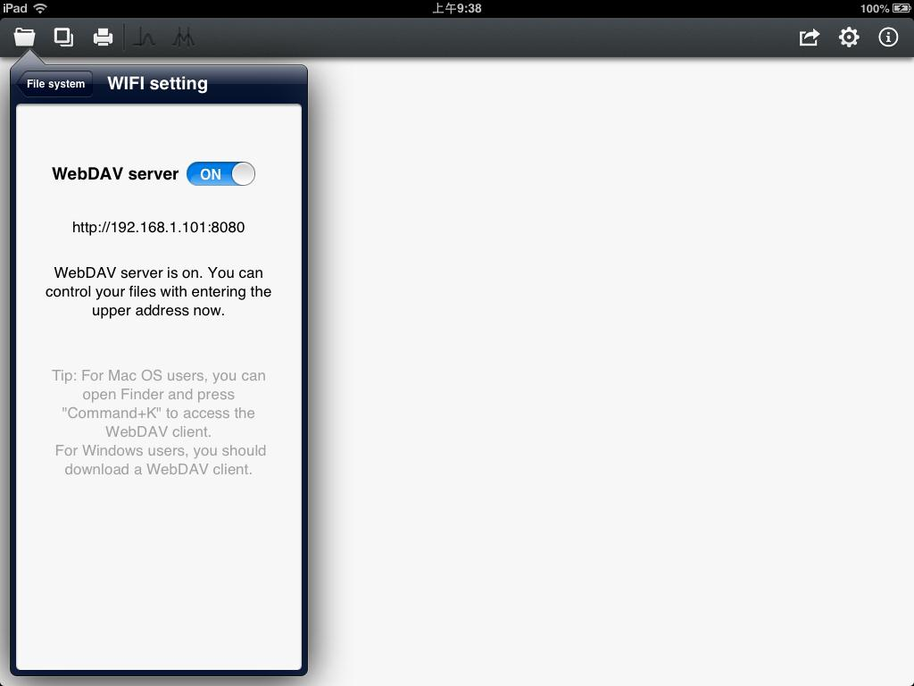
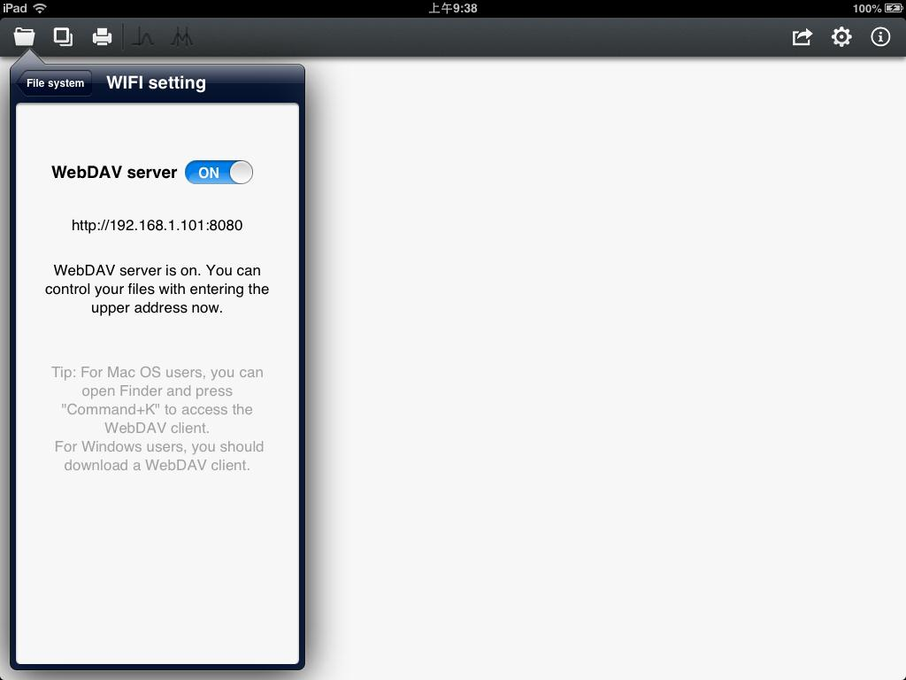

User Guide of Touch NMR
Press the row of "WIFI", you will enter the control view of WebDAV. There is a build-in WebDAV file transmission server in Touch NMR. You must join the same WIFI and transfer files through WebDAV server (Shown in figure2).

Figure 2
According to the prompt, you can choose an appropriate WebDAV client for file operations. You can transfer files or folders via WebDAV, which is similar to FTP. However, it's safer and more reliable. The root directory of WebDAV is exactly the File column which exists in the file manage system. Touch NMR will setup a folder named Demo for first-time user by default. This folder includes examples of FID data. You can add or delete the files via WebDAV. The folder named Resource is used to store spectrums that may be saved in later steps. You'd better not delete it.
During transmission, please do not change the view shown in figure 2, and keep the switch "ON".

Figure 2
According to the prompt, you can choose an appropriate WebDAV client for file operations. You can transfer files or folders via WebDAV, which is similar to FTP. However, it's safer and more reliable. The root directory of WebDAV is exactly the File column which exists in the file manage system. Touch NMR will setup a folder named Demo for first-time user by default. This folder includes examples of FID data. You can add or delete the files via WebDAV. The folder named Resource is used to store spectrums that may be saved in later steps. You'd better not delete it.
During transmission, please do not change the view shown in figure 2, and keep the switch "ON".